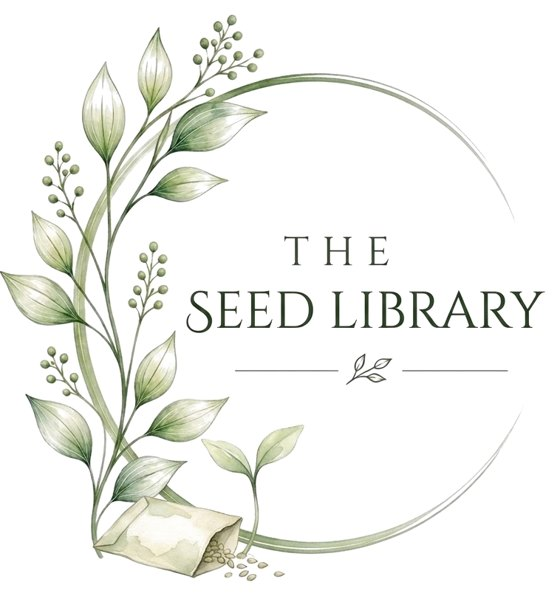

Links & resources
The Seed Library
A small collection of places we trust and people we love. Take a cutting, plant it, and let it grow.
Plant care & safety
Trusted places for houseplant advice and pet safety.
RHS: How to grow houseplantsThe UK's gardening charity. Clear, reliable growing advice.rhs.org.uk ↗RHS: Easy-care houseplantsA great starting point if you are new to plants.rhs.org.uk ↗RHS: How to help a poorly houseplantA step-by-step health check for a struggling plant.rhs.org.uk ↗ASPCA Toxic and Non-Toxic Plant ListCheck whether a plant is safe for cats and dogs, by its Latin name.aspca.org ↗Royal Botanic Gardens, KewWorld-leading plant science, and beautiful gardens to visit.kew.org ↗
Design & inspiration
Ideas for bringing nature into the places you live.
Wellbeing
Plants are good for the mind, but sometimes we all need more support.
Creators we love
Designers, artists, growers, cooks and wellbeing voices whose work inspires us.
MindologyHealing turned into purpose. Gentle, honest reminders on self-trust, rest and growth for a 145K+ community. @mindologyofficialinstagram.com ↗Mindology on TikTokFor the strong ones who are tired. Follow them on TikTok: @mindology.official tiktok.com ↗Onlyplants: SeanRare plants, propagation and plant care secrets, with weekly plant videos and visits to growers around the world. @onlyplants on YouTubeyoutube.com ↗Grow TropicalsA UK mail-order nursery with a huge range of rare and unusual houseplants, aroids and succulents.growtropicals.com ↗Grow Tropicals on TikTokFollow them on TikTok: @growtropicalstiktok.com ↗Faye's PlantsPlants, aquariums, books and cosy nature living. A calm corner of TikTok from a home turned jungle. @fayesplantstiktok.com ↗
tiktok.com ↗Onlyplants: SeanRare plants, propagation and plant care secrets, with weekly plant videos and visits to growers around the world. @onlyplants on YouTubeyoutube.com ↗Grow TropicalsA UK mail-order nursery with a huge range of rare and unusual houseplants, aroids and succulents.growtropicals.com ↗Grow Tropicals on TikTokFollow them on TikTok: @growtropicalstiktok.com ↗Faye's PlantsPlants, aquariums, books and cosy nature living. A calm corner of TikTok from a home turned jungle. @fayesplantstiktok.com ↗
🌱 Know someone who should be here, or want to be featured? Message us on Instagram.
Our own corners
Everything Floreamus Una, in one place.
The Floreamus Una appCare reminders and a daily quote.app.floreamusuna.co.uk ↗Life in Full BloomOur book for grown-ups.floreamus unaFlourish TogetherOur picture book for little ones.floreamus unaSubstackLonger reads and The Weekly Bloom.substack.com ↗Instagram@plantpositivethoughtsinstagram.com ↗TikTok@floreamus.unatiktok.com ↗
We aren't paid for any of these links. If that ever changes, we'll say so clearly next to the link.